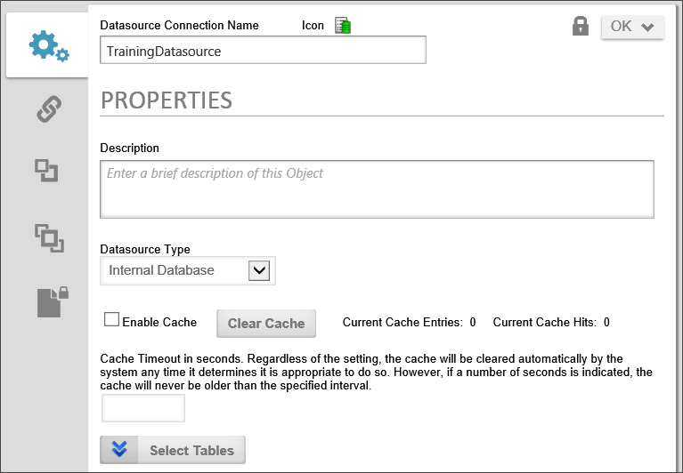
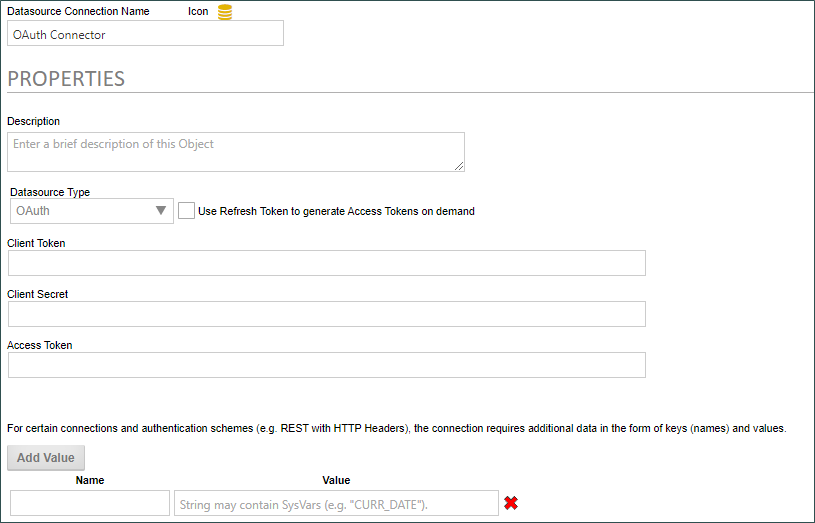
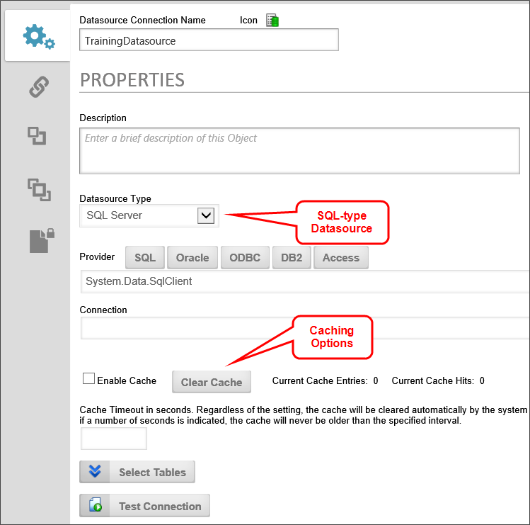

When a user attempts to create an Internal Database Datasource, the Datasource Type will default to "Other" if the user doesn't have permission to create an Internal Database connection.
When a user attempts to create an Internal Database Datasource, the Datasource Type will default to "Other" if the user doesn't have permission to create an Internal Database connection.The Datasource object enables you to create a data source that can connect to an external database. The Datasource object can then be used in multiple areas of Process Director. An example use of the Datasource object is with a Database Connector custom task. With a Database Connector custom task you must specify a data source either manually (by entering a connection string) or by using a Datasource object which was created once and used throughout Process Director.
Organize data sources in root folders of the partition, separate from any implementation folders, so that implementers don't have to export data sources when the implementation is exported from development to production. Exports and Imports are name-based, and relative folder position-based. Consequently, the root folder containing database sources should be mirrored on development and production servers, so that both the names and relative folder positions are exactly the same in both environments. If the mirroring is correct, implementations will be imported/exported between development and production without losing contact with the data sources.

The Datasource object will need to be configured to properly use it in Process Director. Configure the following fields:
|
Field |
Description |
|---|---|
|
Data Provider |
The database provider string |
|
Data Connection String |
The database connection string |
|
Database Type |
The type of database, such as SQL Server, Oracle, etc. |
There are a number of database types that are supported by the Datasource object, which are listed in the Datasource Type dropdown. In addition to supporting the internal Process Director database, the Datasource object also supports a wide variety of other types of data sources :
When a user attempts to create an Internal Database Datasource, the Datasource Type will default to "Other" if the user doesn't have permission to create an Internal Database connection.
Due to a bug in the newer MySQL .NET drivers, the MySQL 6.9.12 or older driver must be used. This is a bug introduced in the MySQL .NET driver version 6.10 and higher (MySQL Bug #89159).
A license change has occurred. Customers using Datasources for Salesforce or MS Dynamics should contact customer support to enable these features in their license.
You may click one of the Provider buttons related to your database to provide an example to use as your configuration or you may use a custom configuration, and provide your own database connection string. For more information on database connection strings please refer to connectionstrings.com.
The Compliance Datasource is available to users of Process Director v5.15 and above. This type is not a database connector, but, instead, provides a secure storage for username and password attributes for use elsewhere. These stored attributes can be accessed via the SDK API in custom scripts to provide the login information needed to access some external data source. Additionally, the attributes can be accessed in Custom Tasks that require user names and passwords, as well as Business Values to provide required login information.
This Datasource enables you to store the attributes securely, separate from the Custom Task or Business Value, to help prevent a compromise of the login data, while still enabling designers to incorporate secure logins in Custom Tasks or Business Values without having to know the actual login information.
The attributes are not accessible via system variable, for security reasons.
Users of Process Director v5.42 and higher can also add Name/Value pairs to the datasource, for connections that require additional data in the form of keys (names) and values.
The Oauth Data Source provides a generic OAuth connector for data sources that use this authentication method.

When using the OAuth data source, you must provide the Client Token, Token Secret, and Access Token for the OAuth authentication. Some OAuth systems enable you to dynamically generate access tokens for each connection, so a property named Use Refresh Token to generate Access Tokens on demand will, when checked, replace the Access Token property with a Refresh Token property, which enables the system to pass the refresh token to the OAuth system to dynamically generate a new access token for each connection instance.
Users of Process Director v5.42 and higher can also add Name/Value pairs to the datasource, for connections that require additional data in the form of keys (names) and values.
Process Director allows you to specify the database type for you Data Connections. The Internal Database type will connect to the database which Process Director is installed. No other options are needed when using the Internal Database type.
Starting with Process Director v3.76, database caching for Datasource objects is implemented on all SQL-type Datasource objects, including Datasources for SQL Server, Access Oracle, and PostgreSQL. When caching is enabled on a Datasource, Process Director will retrieve the data from the database one time, then store the returned data in memory until the cache expires. Any time the database call is subsequently made, Process Director will first check the cache to see if the cache is still active, and, if so, will return the data from the cache, rather than attempting to retrieve the data from the database. If the cache is expired, Process Director will perform the database call, and reset the cache timeout.
When you select one of these data types from the Datasource Type dropdown, the Caching parameters will appear on the configuration form.

You can enable caching by checking the Enable Cache check box.
You can manually clear the cache, if necessary, by clicking the Clear Cache button. The Current Cache Entries label always displays the number of items currently in the cache, and clearing the cache should reset the value to "0".
You can optionally set the Cache Timeout (seconds) to the number of seconds that you wish the cache to remain active. If you do not set the Cache Timeout, Process Director will automatically time the cache out in around eight hours. The Cache Timeout that you should configure for the Datasource will, of course, depend on how current you need the data to be.
When caching is configured, all Business Values and database Custom Tasks that use the Datasource will also use its caching configuration, though you'll need to ensure that you are using the latest version of the Custom Tasks. Custom Tasks that were created prior to February, 2016, are not configured to use Datasource caching.
Users of Datasource caching should notice significant performance increases for data-heavy Forms.
 As a security enhancement to v5.08 and higher, when exporting a Datasource to XML from the Content List, the Datasource Password will not be exported. You will need to re-enter the password when the Datasource is imported again. As a best practice, datasources should not be exported between systems, anyway. They virtually always require reconfiguration on the target machine, and it’s easy to wipe out a working datasource pointing at production data and replace it with another pointing at test data that you imported from your test system. Even worse, when you go back and refresh your test systems from production, the same thing can happen in reverse, causing you to corrupt your production data with test data.
As a security enhancement to v5.08 and higher, when exporting a Datasource to XML from the Content List, the Datasource Password will not be exported. You will need to re-enter the password when the Datasource is imported again. As a best practice, datasources should not be exported between systems, anyway. They virtually always require reconfiguration on the target machine, and it’s easy to wipe out a working datasource pointing at production data and replace it with another pointing at test data that you imported from your test system. Even worse, when you go back and refresh your test systems from production, the same thing can happen in reverse, causing you to corrupt your production data with test data.